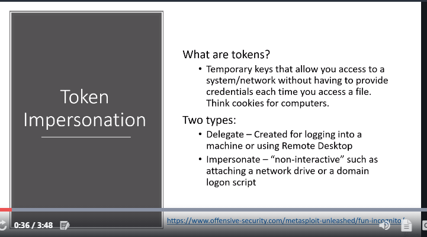

token s are basically cookies fro your computers
so here we ll only see delegate token

if u navigate in a machine and u find a token of a domain admin which u can im[oersonate then u basicvally have the domain admin